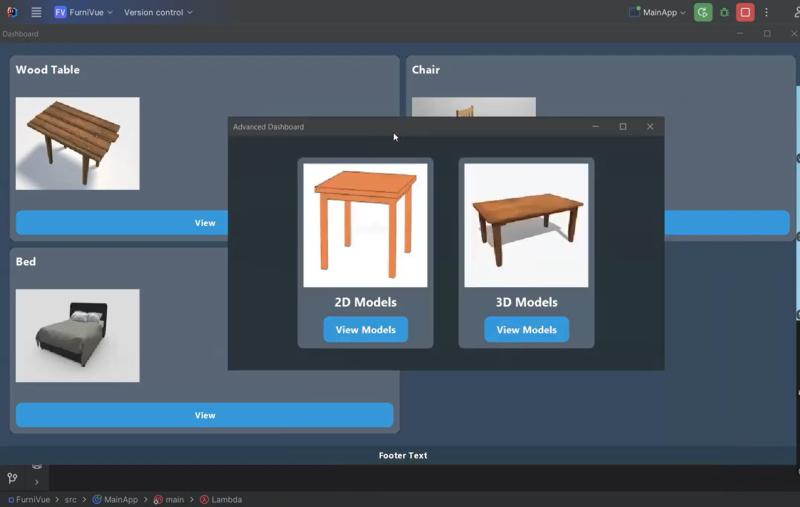

FurniVue – Interior Design
2D/3D real‑time interior visualization tool with usability‑driven design.
JavaSwingOpenGLAgile2D/3D real‑time interior visualization tool with usability‑driven design.
JavaSwingOpenGLAgile
Real‑time platform for connecting service seekers & providers.
Node.jsExpressMongoDBSocket.IOBehavior change companion with analytics & cloud sync.
FlutterFirebaseAnalyticsAnimated, accessible multi‑page portfolio platform.
HTMLCSSJavaScriptSVG